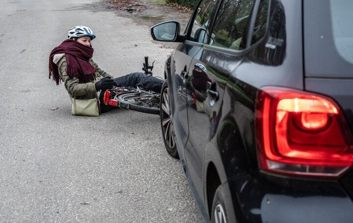

Je ziet als eerste een verkeersongeval gebeuren. Wat moet je doen?

- Ik stop als dit veilig kan en vraag altijd of ik kan helpen.
- Ik bel onmiddellijk de hulpdiensten.
- Het is hoffelijk en beleefd als ik stop, maar dit is geen verplichting.
Als je een verkeersongeval ziet gebeuren, ben je ‘getuige’. Zorg eerst voor de veiligheid: je eigen veiligheid en die van de anderen. Blijf ter plaatse en vraag of je kan helpen. Bel daarna de hulpdiensten (112) als er gewonden zijn. Zijn er geen gewonden maar de politie moet wel tussenkomen, bijvoorbeeld bij hindernissen op de weg, dan bel je 101.